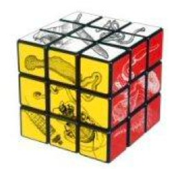

Society of Systematic Biologists
Home of Systematic Biology
Popular contentSyndicateCategories
User loginNavigationWho's onlineThere are currently 0 users and 2 guests online.
|
Evolution of the animals - a Linnean tercentenary celebration
 Subscribers to the journal can view the articles online. Hard copy can be purchased at a specially discounted price of Ã?£47.50 (instead of the normal Ã?£59.50) by contacting Portland Press (quoting reference TB 1496) or Debbie Vaughan at the Royal Society (debbie.vaughan@royalsociety.org). The Fourth Biennial Conference of the International Biogeography SocietyThe meeting will take place January 8-12, 2009 in MÃ?©rida, MÃ?©xico. Invited symposia will feature talks on the biogeography of disease, patterns and processes in biotic interchanges, disjunct distributions in Asia and America, and the biogeography of species extinction. Attendees are invited to submit abstracts for oral and poster presentations. The conference will also include workshops, field excursions, and social events. Registration, contact, and additional information may be found at: http://www.biogeography.org. NESCent call for proposalsCall for Proposals - NESCent Sabbatical Scholars, Working Groups and Catalysis Meetings The National Evolutionary Synthesis Center (NESCent) is now accepting proposals for sabbatical scholars, working groups and catalysis meetings. Proposals for postdoctoral fellowships are accepted at the December 1 deadline only. Proposals for sabbatical scholars (one semester to a full year), working groups and catalysis meetings are accepted twice a year, with June 15 and December 1 deadlines. Proposals for short-term visitors (2 weeks to 3 months) are considered four times a year, with deadlines on January 1, April 1, July 1 and September 1. For more information, please see our website at https://www.nescent.org/science/proposals.php. Third Meeting of the International Society for Phylogenetic NomenclatureThe Third Meeting of the International Society for Phylogenetic Nomenclature will be held in Halifax, Nova Scotia, at Dalhousie University, from July 21 to July 23, 2008. This meeting is organized in close collaboration with the International Society of Protistologists (ISOP) and the International Society for Evolutionary Protistology, which are hosting the joint Protist 2008 meeting, at the same venue, from July 21 to July 26, 2008. For further information, meeting deadlines, and abstract submission please, visit https://protist2008.dal.ca/ or www.phylonames.org to download the circular. Computational Phyloinformatics: A Course at NESCent
24 July - 4 August 2008 http://www.nescent.org/courses/2008/comphy/ Course Director: William Piel (piel@treebase.org) Computational Phyloinformatics is a 10-day summer course sponsored by and held at the National Evolutionary Synthesis Center (NESCent) in Durham, North Carolina (USA) that aims to give students practical knowledge and hands-on skills in phyloinformatics. R. J. H. Hintelmann Award for zoological systematics
Please send applications or nominations until July 15th 2008 to the following address: Society of Systematic Biology LOGO CONTEST!The Society of Systematic Biology needs a new and modern logo that represents our inclusive and international efforts to promote the systematic study of biodiversity. We solicit submissions of potential SSB logos from our membership (or potential members!). If you are a creative, artistic systematist, please consider submitting a logo for this competion. Contest Details: Three NSF Biology Program Director postions available!DIRECTORATE OF BIOLOGICAL SCIENCES, DIVISION OF ENVIRONMENTAL BIOLOGY The National Science Foundation's Division of Environmental Biology (DEB) is seeking qualified candidates for permanent PROGRAM DIRECTOR positions. DEB has openings in three clusters: Systematic Biology and Biodiversity Inventories (1 position), Population and Evolutionary Processes (1 position), and Ecosystem Science (1 position). Program Directors are responsible for program planning and administration, and for furthering the goals of the NSF and the division. More information about DEB can be found at http://www.nsf.gov/div/index.jsp?div=DEB. (Also, click "read more" link below.) Postdoctoral Position - UCSB Phylogenetics and Molecular EvolutionThe Oakley Lab at the University of California-Santa Barbara seeks a highly motivated and productive postdoctoral researcher to work on NSF-funded research (http://nsf.gov/awardsearch/showAward.do?AwardNumber=0643840) on the phylogeny, divergence times, and rates of molecular and morphological (especially eyes) evolution in ostracod crustaceans. The position requires an individual with a PhD and experience in phylogenetic systematics, paleontology, or related fields. Outstanding molecular, computational and/or quantitative skills are particularly advantageous. Funding is available for a minimum of 1 year, and may be extended upon mutual agreement. Preference will be given to candidates with a high probability of applying for (with the help of the PI) and obtaining independent funding; for example through the University of California President�s Postdoctoral Fellowship, NIH-NRSA fellowship, NSF Postdoctoral fellowships, or other funding agencies. Multi-Conference on Systemics, Cybernetics and InformaticsFebruary 20th is the new deadline for papers/abstracts submissions and Invited Sessions Proposals for WMSCI 2008: The 12th World Multi-Conference on Systemics, Cybernetics and Informatics in Orlando, Florida, USA, June 29th-July 2nd, 2008. http://www.sciiis.org/wmsci2008 |
Latest issue
EVOLDIRphylobabble.orgiPhyloPhyloseminarSystematics AssociationNESCentThe Genealogical World of Phylogenetic NetworksCiteULike PhylogenyEvolutionary Bioinformatics
CladisticsBMC Evolutionary Biology
Molecular Biology and Evolution |
 Follow us on Twitter
Follow us on Twitter Find us on Facebook
Find us on Facebook